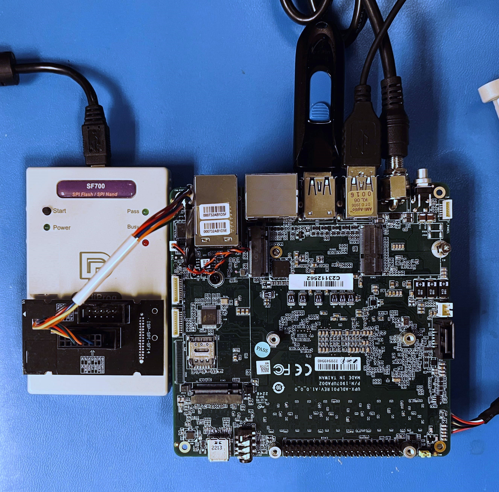

UP Xtreme i12 Board
The UP Xtreme i12 board (UP Xtreme i12) is an x86 maker board based on Intel platform Alder Lake-P. The UP boards are used in IoT, industrial automation, digital signage areas, etc.
Prerequisites
SBL supports UP Xtreme i12 maker board. To start developing SBL, the following equipment, software and environments are required:
Custom SPI flashing cable (instructions).
USB 2.0 pin header cable for debug uart output. OR Make your own.
DediProg SF100 or SF600 programmer
Linux host (see Building on Linux for details)
Internet access
Board Setup
{kind=link}
Before You Start
Warning
As you plan to reprogram the SPI flash, it’s a good idea to backup the pre-installed BIOS image first.
Boot the board and enter BIOS setup menu to get familiar with the board features and settings.
Early boot serial debug console can be reached via UART1 located on CN9 header on the UP Xtreme i12 board. Make sure you can observe serial output message running the factory BIOS first.
Note
To make your own UART debug adapter by direct wiring, refer to CN9 Header Pinout for UART1:
Pin |
Signal |
8 |
GND |
9 |
UART_RX |
10 |
UART_TX |
Building
UP Xtreme i12 board is based on Intel ADL-P. To build:
python BuildLoader.py build adlp
The output images are generated under Outputs directory.
Stitching
Stitch SBL images with factory BIOS image using the stitch tool:
python Platform/AlderlakeBoardPkg/Script/StitchLoader.py -i <BIOS_IMAGE_NAME> -s Outputs/adlp/SlimBootloader.bin -o <SBL_IFWI_IMAGE_NAME> -p 0xAA000104
<BIOS_IMAGE> : Input file. Factory BIOS extracted from UP Xtreme i12 board.
<SBL_IFWI_IMAGE> : Output file. New IFWI image with SBL in BIOS region.
-p <value> : 4-byte platform data for platform ID (e.g. 04) and debug UART port index (e.g. 01).
Note
StitchLoader.py script works only if Boot Guard in the base image is not enabled, and the silicon is not fused with Boot Guard enabled. If Boot Guard is enabled, please use StitchIfwi.py script instead.
See Stitch Tool on how to stitch the IFWI image with SBL.
Slimbootloader binary for capsule
A capsule image could ecapsulate a Slimbootloader image to be used in firmware update mechanism. More information is described in Firmware Update.
For the process running properly, an IFWI image programmed on board with TOP SWAP size configuration is required.
Note
Enabling TOP SWAP size configuration requires additional firmware components and tools.
Creating Slimbootloader binary for capsule image requires the following steps:
Build SBL for UP Xtreme i12:
python BuildLoader.py build adlp
Edit the 4-byte platform data in Slimbootloader image by Hexedit or equivalent hexdecimal editor.
Go to top of TOP SWAP A at address 0xCFFFF4, edit 04 01 00 AA as below
00CFFFF0 90 90 EB B9 04 01 00 AA A4 F0 FE FF 00 F0 FE FF ................
Go to top of TOP SWAP B at address 0xC7FFF4, edit 04 01 00 AA as below
00C7FFF0 90 90 EB B9 04 01 00 AA A4 F0 FE FF 00 F0 FE FF ................
For more details on TOP SWAP regions, please refer Flash Layout
Generate capsule update image FwuImage.bin:
python BootloaderCorePkg/Tools/GenCapsuleFirmware.py -p BIOS Outputs/adlp/SlimBootloader.bin -k KEY_ID_FIRMWAREUPDATE_RSA3072 -o FwuImage.bin
For more details on generating capsule image, please refer Generating capsule.
Triggering Firmware Update
Please refer to Firmware Update on how to trigger firmware update flow. Below is an example:
To trigger firmware update in SBL shell:
Copy
FwuImage.bininto root directory on FAT partition of a USB keyBoot and press any key to enter SBL shell
Type command
fwupdatefrom shellObserve SBL resets the platform and performs update flow. It resets multiple times to complete the update process.
Flashing
Flash the IFWI image to UP Xtreme i12 board using a SPI programmer. Header CN19 on the board should be used, see instructions for additional details.
Good Luck!